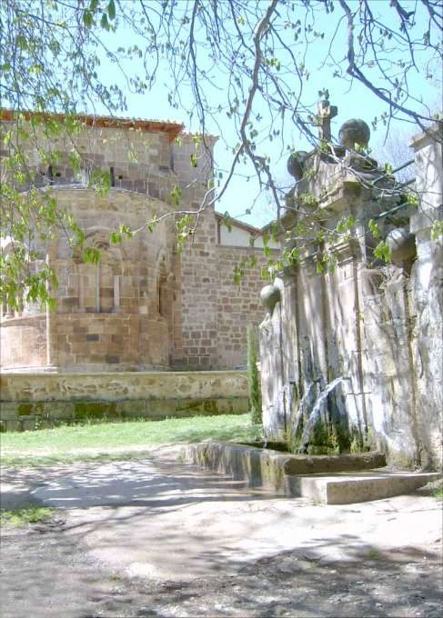
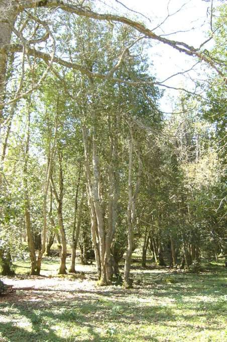

Acebal de Valgañón
Valgañón · comarca del Oja
- Distancia5,5 km
- Desnivel320 m
- Tiempo orientativo2 h
- Dificultadmedia
- Época recomendadaprimavera y otoño
- Terrenocamino y senda
La visita a este pequeño bosquete de acebos no sólo nos dará la oportunidad de contemplar espléndidos ejemplares de esta especie protegida, sino que también nos permitirá hacer todo un curso de botánica riojana. A lo largo del recorrido veremos aulagas, brezos, majuelos, quejigos, hayas, avellanos, serbales… En fin, será difícil que en un espacio tan corto podamos contemplar tanta diversidad vegetal como la que nos encontraremos a lo largo de este paseo.
La iglesia románica de Nuestra Señora de Tres Fuentes, del siglo XII, también será un buen motivo para acercarnos hasta la linde con las tierras de Burgos.
{kind=link}

{kind=link}

Recorrido
La Iglesia de Nª Señora de Tres Fuentes se encuentra situada a unos 800 metros de Valgañón, en la carretera que se dirige hacia Fresneda. Comenzamos el paseo por la parte trasera de la iglesia. Remontamos la ladera y accedemos hasta una curva muy cerrada de la carretera. Desde aquí el camino ya es bastante evidente, adentrándose en el Arroyo de la Dehesa y salvando una fuerte pendiente en algunos tramos.
Culminamos el ascenso, el paisaje se despeja y llegamos a la balsa de Anguta, rodeada por un murete. Continuamos la marcha por un camino poco marcado sobre la pradera que deja a su izquierda dos pequeños refugios. Casi de inmediato el camino nos interna en el acebal; prácticamente impenetrable a la luz. Al dejar atrás el acebal volvemos a salir a un espacio abierto.
Descendemos por un sendero que nos invita a continuar recto, pero debemos girar hacia la izquierda y descender hacia una vaguada colonizada por las hayas; alguna de ellas con marcas amarillas en sus troncos. Poco después dejamos el cauce y tomamos, a la izquierda, una senda que arranca a media altura. Enseguida retomamos el descenso.
La senda se va encontrando con otras a su paso, pero ya no ofrece dudas a la hora de llevarnos hasta el pueblo de Valgañón.